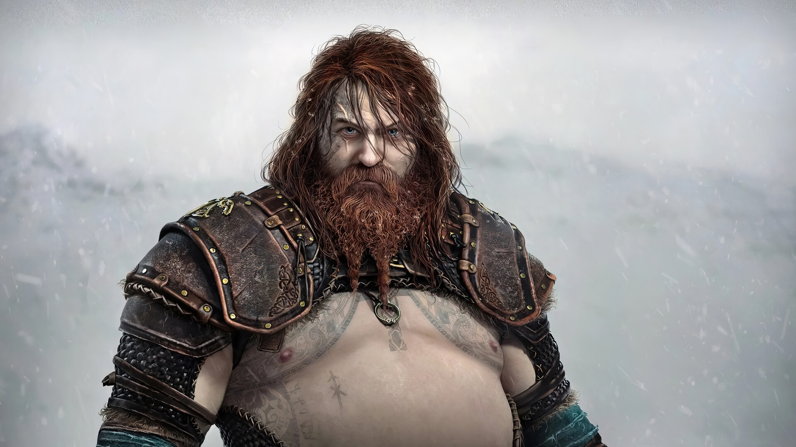
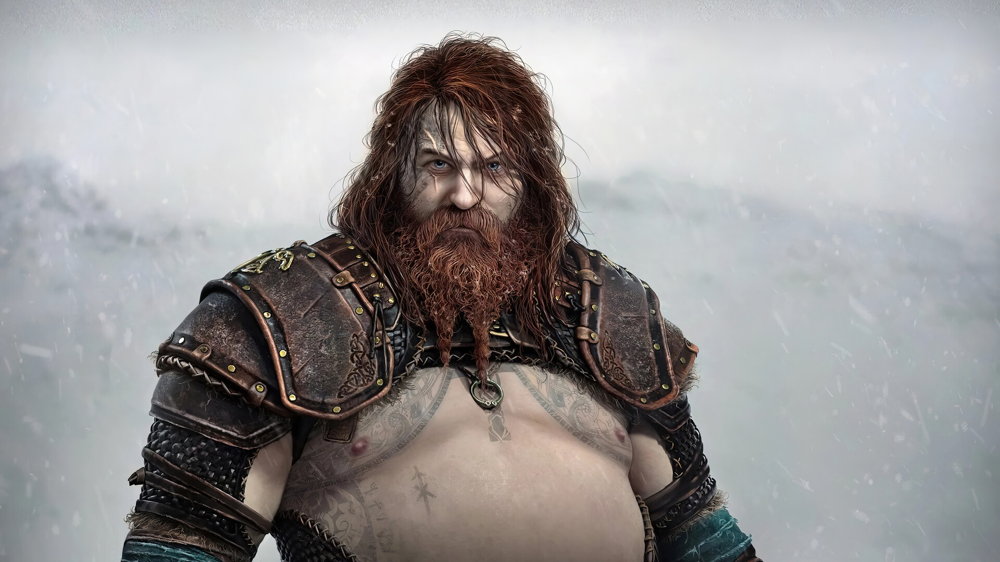

"Kratos and Atreus must travel across the Nine Realms to find anwsers and prepare for a prophesied battle that will bring about the end of the world. This, while the Asgardian cadres prepare for war. On this journey, they will explore stunning mythical landscapes, gather allies from all realms and face fearsome enemies, including norse gods and monsters. As the threat of Rangnarök draws ever closer, Kratos and Atreus must choose between the safety of their family and the safety of the realms..."


 


Kratos is a father again. As mentor and protector to Atreus, a son determined to earn his respect, he is forced to deal with and control the rage that has long defined him while out in a very dangerous world with his son.
With revenge against the Gods of Olympus in the past, Kratos now lives in the realm of Norse deities and monsters.
It is in this harsh and merciless world that he must fight to surtive as he teaches his son to do the same and tries to stop him from repeating the cruel mistakes of the Ghost of Sparta.
Atreus is a happy and curious child who is kind to others when he engages in conversation with them, believing that he should help people whether they be living or dead. He is fond of exploring and learning Norse mythology, particularly from Mimir and Freya.
When he was a child, Atreus learned various Norse languages and hunting from his mother. However, his gentle disposition initially made him hesitant to take a life, whether it was an innocent deer or a troll that attacked his father. Despite this, Atreus constantly tries to prove to his father that he can handle himself.
One of the most interesting giants from Norse mythology is the giantess Angrboda, whose name means ‘bringer of grief’. But she was far from a simple force for grief, and as the consort of Loki is one of the most important mothers in Nose mythology, bearing three of the most fearsome creatures from Norse myth.
While she's never seen in the game, Jörmungandr's Jötunn Shrine specifically names her in Elder Futhark, alongside her two other children Hel and Fenrir. It's possible that she survived the genocide of the giants by Aesir Gods since both of her sons Jörmungandr and Fenrir are alive and well even though her present whereabouts are currently unknown.
nitially, Freya is very friendly, hospitable, and at times motherly towards Atreus, taking care of him when his illness had become worse and his father had set out to retrieve a cure. She was friendly towards Kratos, despite the latter's open distrust of virtually everyone and hatred for gods.
It is implied that Freya sees herself in Kratos and that this is why she decided to help him, although she also teases "or maybe I just like you". It is unknown which of these answers is true, but she is shown to care for Atreus, both as a friend and as a mother-figure of sorts.